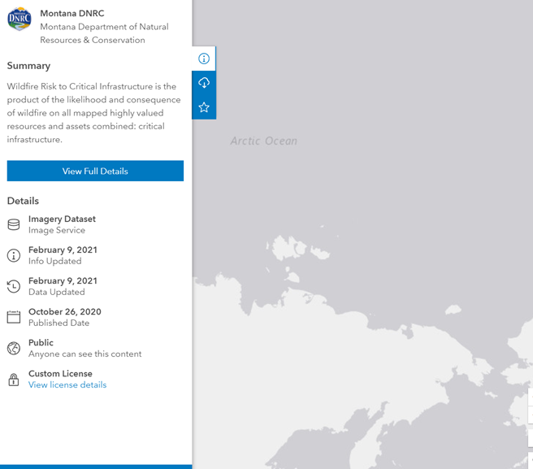

UMD Dataset Research & Analysis:
Critical Infrastructure User Guide Table of Contents
1. Introduction
1.1 Purpose
1.2 Background
1.3 Scope
2. Describing the Data Source
2.1 About Google Dataset Search
2.2 Dataset Search Key Features
2.3 Dataset Search Snapshots Across the Web
2.4 Walkthrough Tutorial of Dataset Search Engine
3. Critical Infrastructure Web Scraping Spreadsheet
3.1 General Information
3.2 Data Collection Process
3.3 How is This Spreadsheet Organized?
4. Sample Data Analysis Examples
1) Introduction
Purpose
The purpose of this guide is to support researchers within the College of Information Studies (iSchool), the Philip Merrill College of Journalism (JSchool), and other schools at the University of Maryland.
Background
This guide has been written by the project members of Terrabyte Solutions for the University of Maryland’s Mary Ann Francis. This project is sponsored through the iConsultancy in partnership with the College
of Information Studies’ Integrated Capstone for Information Science (INST490).
There are many public datasets available that have limited documentation or shared information about how they can be best used and understood. Open source researchers and journalists need information on these
open source datasets to effectively and efficiently use them. Projects like this would contribute to a growing repository of documentation about open source data sets that can be made available to a variety of stakeholders.
Scope
The scope of this project includes research into available information about the data source and content, an inventory and survey of the data sets included in the source, analysis of the capabilities of the data source,
documentation regarding the datasets and capabilities, and technical data analysis examples of the type of research that could be done with the available data.
2) Describing the Data Source
About Google Dataset Search
Dataset Search is a search engine for datasets designed for a variety of users including but not limited to academic researchers, students, business, analytics, data scientists. It is a fairly new search engine that was
first launched on September 5, 2018. Using a keyword search, users can browse through and explore a variety of datasets hosted in thousands of repositories across the Internet. According to Google Research Scientist, Natasha
Noy, Dataset Search has indexed “almost 25 million of these datasets, giving you a single place to search for datasets and find links to where the
Dataset Search Key Features
Early adopters and users of Dataset Search have contributed to key features. Using on-board filters, you can now filter search results based on the types of datasets you want. The “Download format” selection filters datasets
by tabular, document, image, text, archive, or other format. By selecting “Free”, users can also choose to view datasets that are available free of charge from the provider. Users may also filter by “Usage rights” to search for results allowing for either commercial or noncommercial use. And the “Last Updated” tool filters datasets that have been last updated over the past month, year, or past 3 years.
Dataset Search Snapshots Across the Web
According to Google Research’s The Keyword blog post, the majority of topics that the datasets cover are from the geosciences, biology, and agriculture fields. With over 2 million collections, the United States is the
front-runner in open government datasets available on the web. The most popular data format is tables – as of January 2020, Dataset Search has indexed over 6 million of them. Dataset Search continues to grow as future
developers describe their datasets with schema.org, an open standard. If you found a dataset that is not yet available on Dataset Search, users can ask the data providers to add the schema.org descriptions so that others can find and learn about their dataset too.
2. After querying “critical infrastructure’ and filtering on free datasets, these are the returned dataset collections.
3. Scroll all the way down on the scrollable panel on the left side of the page to fulling access to all datasets in terms of searching.
4. Press Ctrl + F on the keyboard to search the specific dataset. The related datasets will be highlighted.
5. Click on the selected dataset on the left side of the webpage, the basic information which included: title, article link, dataset updated date, dataset provider, authors, license, the country/area of article, and the description of article.
6. Click on the “Explore at” links to be redirected to more details regarding the dataset source, and for access to direct file downloads.
7. This is an example of the “Explore at” link redirecting the user to ArcGIS Hub platform where the raw data is accessible and available for download.

8. Click on View Full Details.
9. Here, more details about the above dataset are available below through the “Explore at” links. Users will have access to any additional information they were not able to retrieve directly from the Dataset Search Engine results preview page.
3) Critical Infrastructure Web Scraping Spreadsheet
General Information
After researching available information about Dataset Search and its content, we surveyed and assessed the critical infrastructure related datasets. This work product serves as a snapshot of the available dataset results as of
March 23, 2022. The dataset results contained a total of 174 entries.
Data Collection Process
The Developer team of Terrabyte Solutions used the Beautiful Soup library in Python to build a script to scrape and parse data from the Dataset Search results page for more streamlined analysis and processing.
Although we were able to automate many of the resulting datasets’ title, dataset provider, published date, and website links, we noticed that Google Dataset often reported an outdated last “Dataset updated” date, which was only accessible after directly accessing the “Explore at” links.
To maximize data completeness and accuracy, as a team, we manually verified the web scraped data and added several additional fields (keyword tags, doi, geographic context, etc.) to provide a more enhanced context into the capabilities of the data source and the resulting “critical infrastructure” related datasets. Our collection is available in the We are a Google Sheets cloud-based application, which can be easily accessed and exported into several file formats based on user needs.
How is This Spreadsheet Organized?
The spreadsheet document variables are explained in the following table: